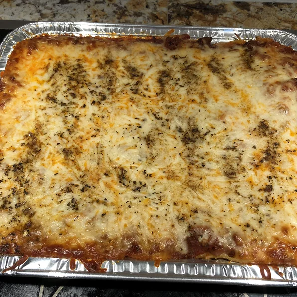

Description
This recipe is easy to make at home and ingredients doesn't cost much.
With approximately 2 hours of your time you can make delicious Baked Spaghetti.
Try it out yourself!
Ingredients
- 1 (16 ounce) package spaghetti
- 1 pound ground beef
- 1 onion, chopped
- 1 (32 ounce) jar meatless spaghetti sauce
- ½ teaspoon seasoned salt
- 2 eggs
- ⅓ cup grated Parmesan cheese
- 5 tablespoons butter, melted
- 2 cups small curd cottage cheese, divided
- 4 cups shredded mozzarella cheese, divided
Steps
- Preheat oven to 350 degrees F (175 degrees C). Lightly grease a 9x13-inch baking dish.
- Bring a large pot of lightly salted water to a boil. Cook spaghetti in boiling water, stirring occasionally until cooked through but firm to the bite, about 12 minutes. Drain.
- Heat a large skillet over medium heat; cook and stir beef and onion until meat is browned and onions are soft and translucent, about 7 minutes. Drain. Stir in spaghetti sauce and seasoned salt.
- Whisk eggs, Parmesan cheese, and butter in a large bowl. Mix in spaghetti to egg mixture and toss to coat. Place half the spaghetti mixture into baking dish. Top with half the cottage cheese, mozzarella, and meat sauce. Repeat layers. Cover with aluminum foil.
- Bake in preheated oven for 40 minutes. Remove foil and continue to bake until the cheese is melted and lightly browned, 20 to 25 minutes longer.
Return to main page